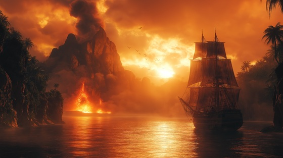

"The Island of Giants" tells of Sinbad the Sailor’s encounter with colossal beings during his voyages. These towering creatures — embodiments of ancient power and terror — test the very limits of his courage. The song captures the crushing weight of walking in a land where every step of a giant could end a life. Against impossible odds, Sinbad faces them not with despair, but with defiance, proving that courage can rise even in the shadow of gods.
The Island of Giants
Shore of silence, mountains rise,
But shadows move with living eyes.
The earth itself begins to shake,
Each thunder step, the heavens quake.
Colossal forms in the burning haze,
Titans born of forgotten days.
Footsteps echo, drums of doom,
The island wakes, it seals my tomb.
The Island of Giants, where legends tread,
Where every breath could strike me dead.
Stone and fire, flesh and bone,
Yet I face the gods alone.
Hands like mountains, fists of war,
Eyes like suns on a cursed shore.
Their shadows stretch across the sand,
No mortal dares defy their land.
Still I walk with defiant stride,
For fate is my eternal guide.
The ground is torn, the sky turns red,
A kingdom built for the mighty dead.
The Island of Giants, where legends tread,
Where every breath could strike me dead.
Stone and fire, flesh and bone,
Yet I face the gods alone.
Bones of sailors line the caves,
Echoes whisper of countless graves.
But Sinbad’s flame will never fade,
A mortal heart no fear can invade.
Through giant wrath and blazing sky,
A legend forged will never die.
Colossus roars, the earth divides,
A storm of fury where terror hides.
But courage climbs where giants fall,
A single man defies them all.
The Island of Giants, where legends tread,
Where every breath could strike me dead.
Stone and fire, flesh and bone,
Yet I face the gods alone.
When dawn arrives, the shadows flee,
But their echoes burn eternally.
Sinbad sails on, the horizon near,
Giants fade, but the tale is clear.